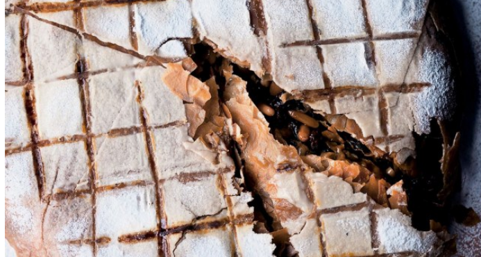

Chicken pastilla

Time and effort are needed for this dish, but it’s well worth it. The result is a delicious, highly exotic feast with which to feed a huge table of friends. This was first served at NOPI as a rabbit pastilla which we then changed to pheasant over the Christmas season. We’ve changed it to chicken here, for the sake of ease of preparation, but switch back to the rabbit or pheasant if you like. Your butcher can help you prepare the rabbit for cooking if you’re not keen. Those sticking with chicken must not worry about missing out on a gamey quality, though: the depth of flavour in the sauce – heavy in chocolate, smoky chillies, stock and wine – imparts such an unusual richness that people are often surprised that they are eating chicken rather than pheasant in the first place. If you want to get ahead in terms of preparation, you can bring the dish up to the point where the cooked chicken meat has been pulled off the bones and returned to the sauce. Leave the meat in the sauce overnight in the fridge and bring it back to room temperature before continuing the next day. This recipe was a team effort at NOPI. It started with Scully’s need to use up some excess dried chillies which were hanging at the NOPI reception for a while, like garlands to welcome guests as they entered the restaurant. Thanks to Andreu Altamirano, whose recipe for the Catalan spinach came from his father..
Catalan spinach:
Season the chicken pieces with 1½ teaspoons of salt and a good grind of black pepper. Heat the sunflower oil in a large sauté pan and place on a high heat. Add half the chicken pieces and sear for 7–8 minutes, turning once halfway through, until deep golden-brown on both sides. Remove from the pan and set aside to cool while you continue with the remaining batch.
Keep the pan on the heat and add the onions and garlic. Cook on a medium-high heat for 15–18 minutes, until the onions are soft, dark and caramelized like jam. Keep a close eye on it towards the end and stir constantly, to make sure it does not catch on the bottom of the pan. Add the tomatoes, cinnamon, peppercorns and dried chillies, along with ½ teaspoon of salt. Continue to cook for another 4–5 minutes, stirring from time to time, then slowly pour over the brandy. Cook for a further 2 minutes, then return the chicken pieces to the pan. Pour over the wine and stock, reduce the heat to low and simmer, covered, for 1 hour. Remove the chicken pieces, increase the heat and let the sauce bubble away for 30–35 minutes, until it has reduced by a quarter and has the consistency of caramel. Remove and discard the cinnamon stick and chillies, add the chocolate and cook for 2 minutes, stirring often. Remove from the heat and set aside to cool: you should have about 500ml in the pan.
Once the chicken is cool enough to handle, use your hands to pick all the meat off the bones. Return the meat to the sauce, stir gently and set aside.
To make the Catalan spinach, pour the sherry vinegar and brandy into a small saucepan and place on a medium-low heat. Warm through for 5 minutes, then remove from the heat. Stir through the currants and set aside to cool. Mix the pine nuts with 1 teaspoon of oil and the paprika and set aside. Pour the remaining oil into a very large sauté pan, place on a medium-low heat and add the shallots. Cook for about 8 minutes, until soft and lightly coloured. Add the garlic, along with 1 teaspoon of salt, and cook for a further 2 minutes. Add the currant and brandy mix, along with the pine nuts, and cook for 2 more minutes. Pour in the cream, increase the heat and cook for 3 minutes, to reduce the sauce by a quarter. Stir in the spinach and cook for 3–4 minutes, uncovered, for the leaves to wilt and for the liquid to evaporate so that there is about 2 tablespoons left in the pan.
Preheat the oven to 200°C/180°C fan/gas mark 6.
Brush the base and sides of a large deep ovenproof sauté pan – around 25cm wide and 8cm deep – with about a tablespoon of the melted ghee. Brush the first sheet of filo pastry and line the base of the pan. Continue with the next sheet, generously overlapping as you go, and leaving about an 8cm overhang over the edge of the pan with each sheet. Work quite quickly here, so that the pastry does not dry out, brushing each sheet liberally with the melted ghee. Continue until you have used two-thirds of the pastry sheets, then spoon the spinach mixture into the base of the pan. Spread the chicken on top, then continue with the remaining pastry sheets, tucking these ones into the pan, as though making a bed with fitted sheets.
Continue until all the filo has been used before drawing in the overhanging pastry sheets and sealing these on top of the pie with a final brush of the melted ghee.
Place in the oven and cook for 1 hour, uncovered. Cover with foil and cook for a final 10 minutes, so that the bottom gets golden brown without the top burning. Remove from the oven and set aside for 10 minutes before inverting the pastilla on to a platter. Sprinkle over the icing sugar, through a fine mesh sieve, and serve warm as is. You can also make a mesh pattern on top of the pastilla by heating up a metal skewer with a blow-torch until red hot. Create parallel lines by burning the sugar in straight lines, spaced 2cm apart and then repeating at a 90° angle.